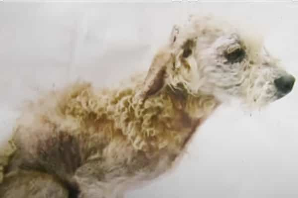
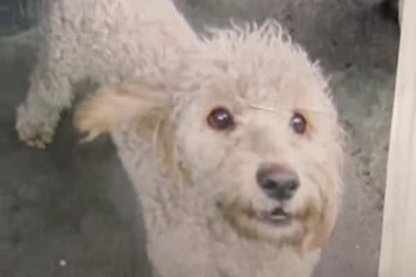

La Fundación Huella Roja es una organización que ofrece
esterilización, vacunación y desparasitación a perros y gatos callejeros de Bogotá.
ANTES
DESPUÉS
Con nuestra ayuda muchos perros y gatos rescatados han mejorado su calidad de vida. Tú tambien puedes formar parte del cambio.
Ver más